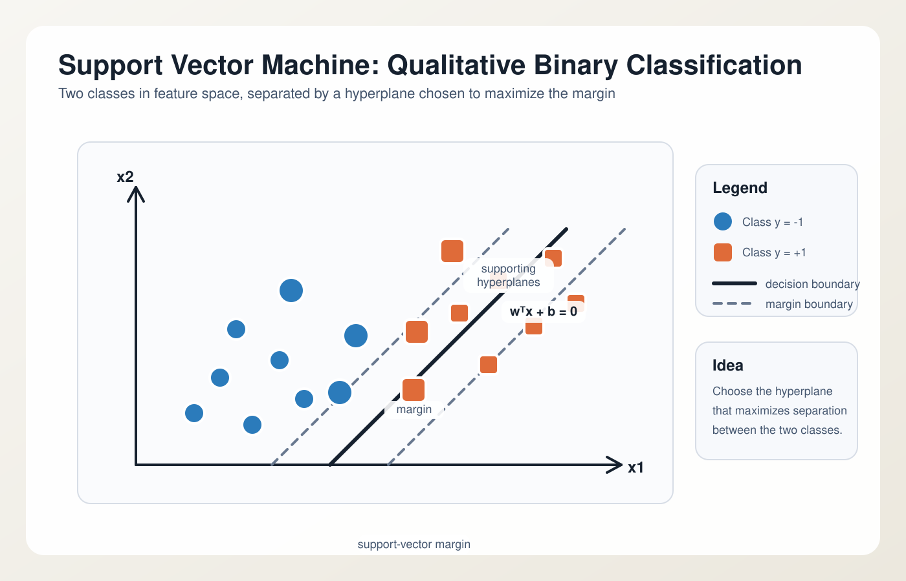
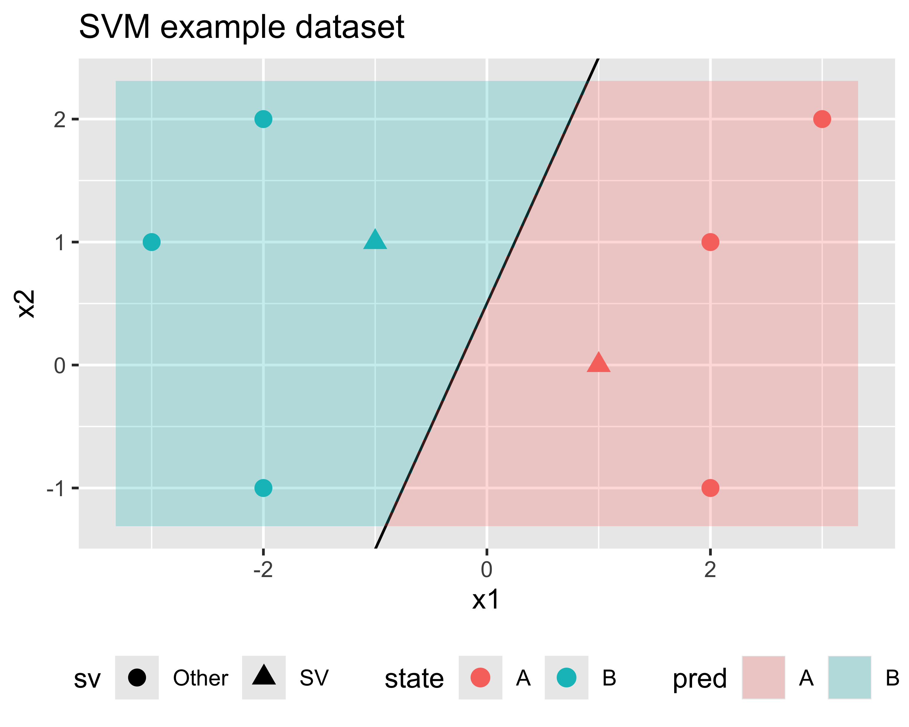
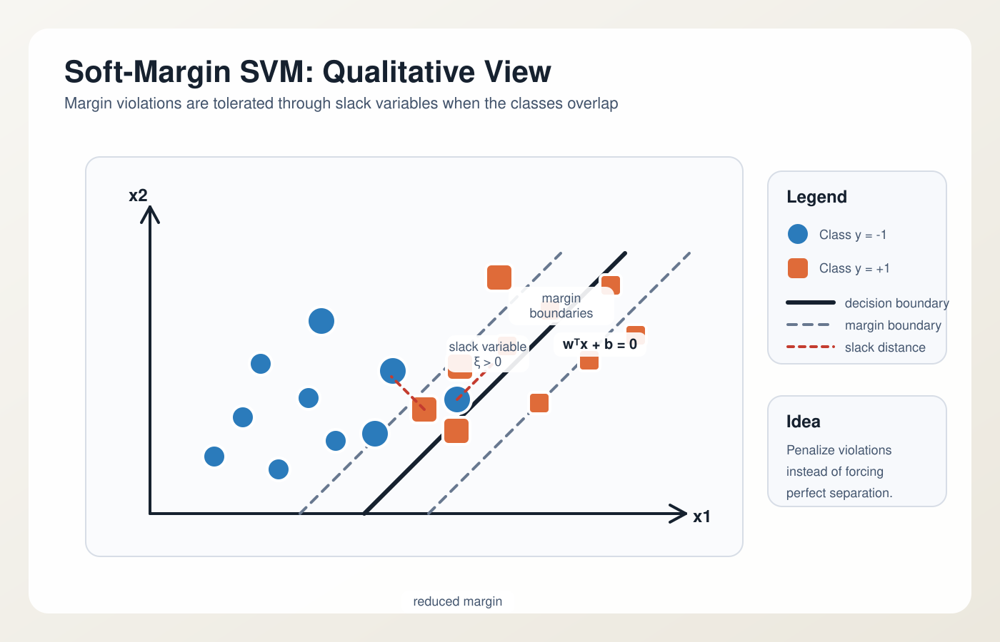
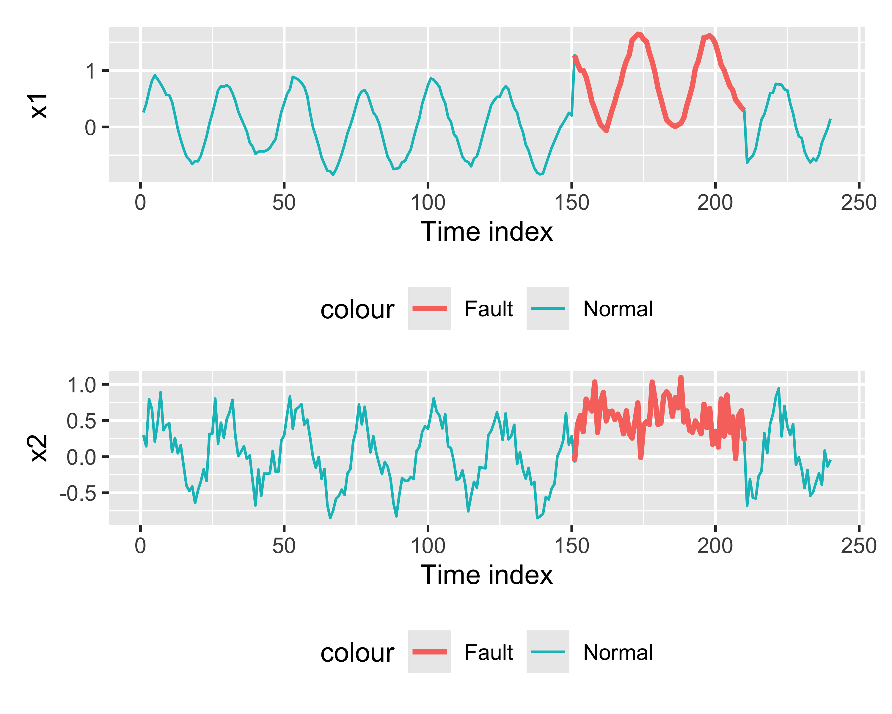
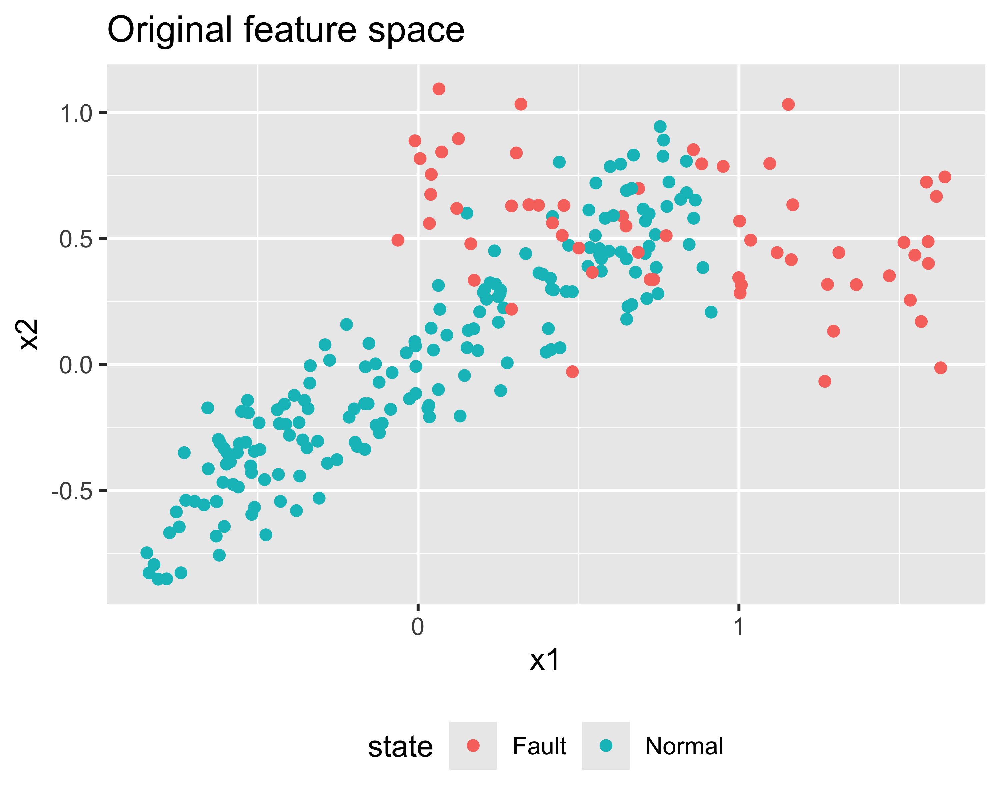
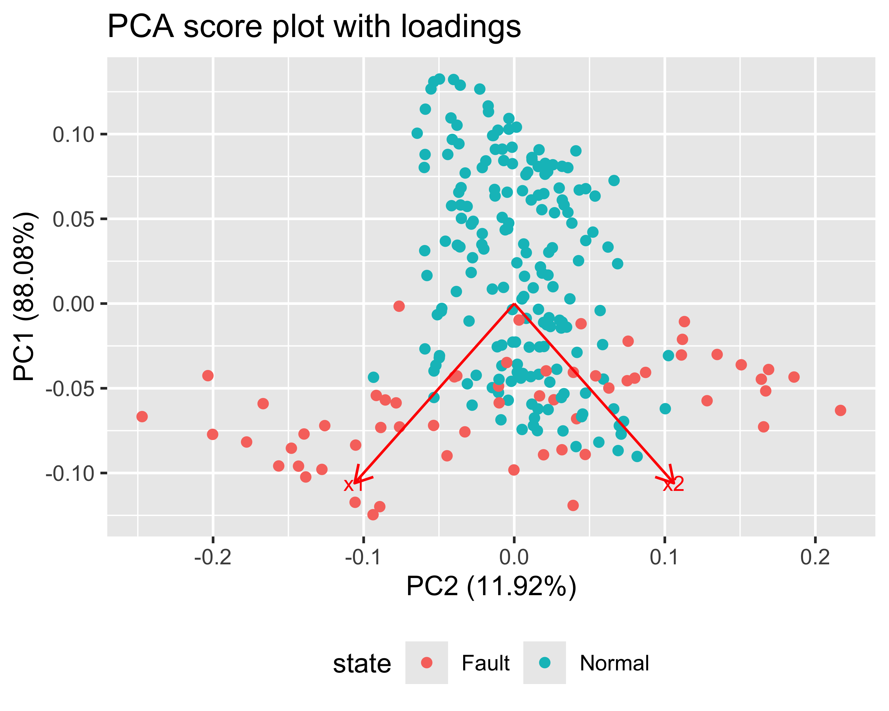
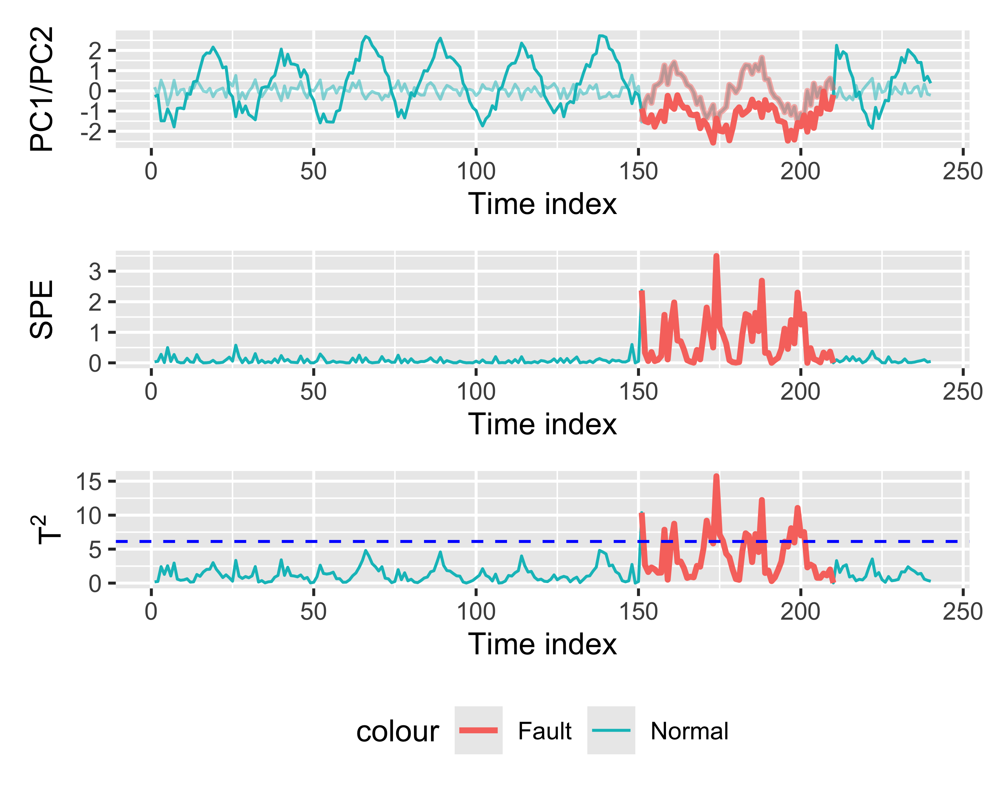
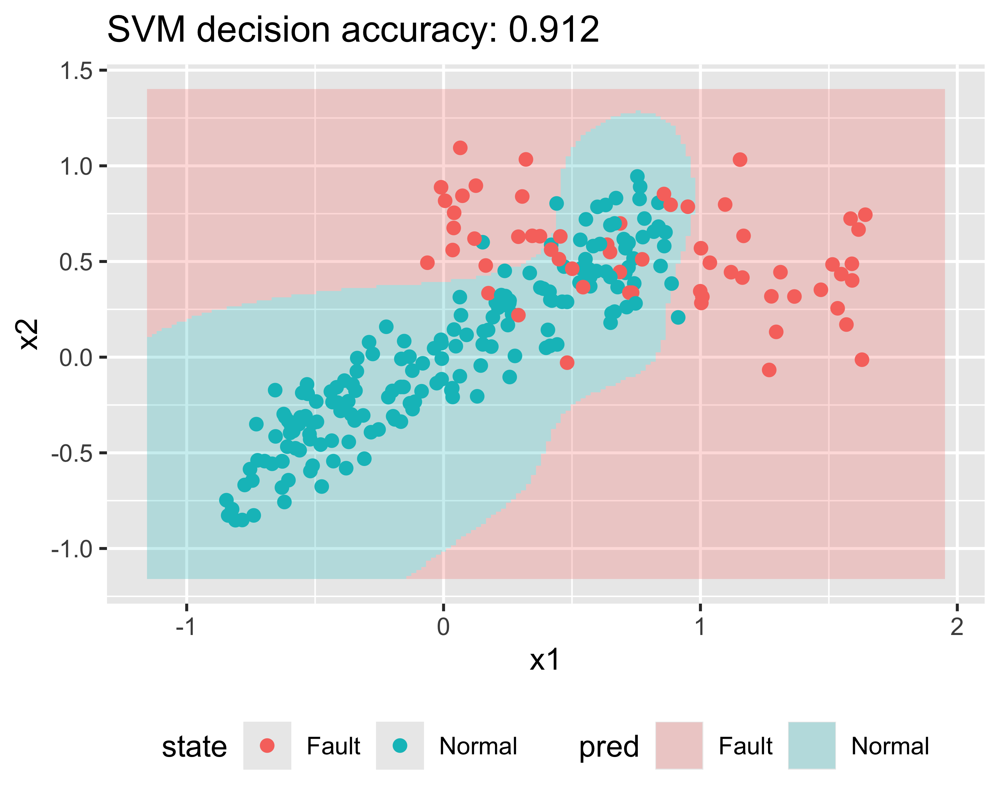
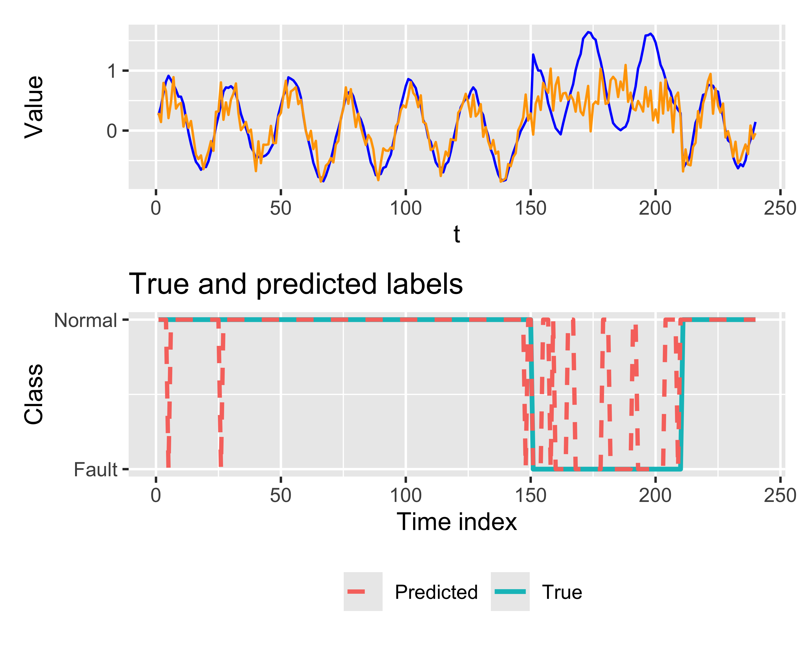

(Intercept) x1 x2
-0.2 -0.8 0.4 Feature-based analysis of time series
Multi-agent system for smart machining, part II
Paolo Bosetti
Feature-based time-series analysis
In feature-based analysis, a multivariate time series in \(p\) dimensions is transformed into a sequence of vectors \[ \mathbf{x}_t \in \mathbb{R}^p,\quad t = 1,\dots,N \] where each component is either a direct measurement or an extracted descriptor such as RMS, variance, spectral energy, kurtosis, or temperature gradient
The objective is to project, compress, classify, or separate process states in the feature space rather than directly on the raw waveform
Two standard techniques are:
- PCA, mainly for dimensionality reduction, monitoring, and latent-structure analysis
- SVM, mainly for supervised classification and margin-based separation
PCA theory
PCA: data matrix and centering
Let the feature matrix of a MVTS be \[ \mathbf{X} = \begin{bmatrix} \mathbf{x}_1^T \\ \mathbf{x}_2^T \\ \vdots \\ \mathbf{x}_N^T \end{bmatrix} \in \mathbb{R}^{N \times p} \] where each row is a feature vector extracted at one time instant or from one time window statistics
In other words, uppercase \(\mathbf{X}\) collects all observations, while lowercase \(\mathbf{x}_t\) denotes the feature vector of the \(t\)-th observation
PCA starts from the centered matrix \(\mathbf{X}_c\): \[ \mathbf{X}_c = \mathbf{X} - \boldsymbol{\mu}^T \] with sample means vector: \[ \boldsymbol{\mu} = \frac{1}{N}\sum_{t=1}^{N}\mathbf{x}_t \]
If variables have different physical units, one usually standardizes them before PCA
PCA: covariance matrix and eigenproblem
The sample covariance matrix (\(p\times p\))is: \[ \mathbf{S} = \frac{1}{N-1}\mathbf{X}_c^T \mathbf{X}_c \]
PCA solves the eigenvalue problem: \[ \mathbf{S}\mathbf{p}_i = \lambda_i \mathbf{p}_i, \quad i = 1,\dots,p \]
where:
- \(\lambda_i\) is the variance explained by the \(i\)-th principal component
- \(\mathbf{p}_i\) is the corresponding eigenvector, or loading vector
The indexes \(i\) are sorted so that: \[ \lambda_1 \ge \lambda_2 \ge \dots \ge \lambda_p \ge 0 \]
Note
The eigenvectors \(\mathbf{p}_i\) are orthogonal and form a new coordinate system in feature space, where the first axis captures the largest variance, the second axis captures the largest remaining variance, and so on.
PCA: scores and low-dimensional representation
The projection of the data onto the principal axes gives the scores matrix (\(N\times p\)): \[ \mathbf{T} = \mathbf{X}_c \mathbf{P} \] that is, \[ \mathbf{T} = \begin{bmatrix} \mathbf{t}_1^T \\ \mathbf{t}_2^T \\ \vdots \\ \mathbf{t}_N^T \end{bmatrix}, ~~~ \mathbf{t}_t^T = \mathbf{x}_{c,t}^T \mathbf{P},~~~\mathbf{P} = [\mathbf{p}_1,\mathbf{p}_2,\dots,\mathbf{p}_p] \]
Using only the first \(a < p\) components yields the reduced model \[ \mathbf{X}_c \approx \mathbf{T}_a \mathbf{P}_a^T \] where: \[ \mathbf{T}_a = \mathbf{X}_c \mathbf{P}_a \]
Note
For a given subset of principal components \(a\), the explained variance ratio is: \(\eta_a = \frac{\sum_{i=1}^{a}\lambda_i}{\sum_{i=1}^{p}\lambda_i}\). This can be used to select the number of components to retain, for example by setting a threshold such as \(\eta_a \ge 0.95\).
PCA: reconstruction error and monitoring statistics
For centered observation row \(\mathbf{x}_{c,t}^T\), PCA computes the score row \[ \mathbf{t}_t^T = \mathbf{x}_{c,t}^T \mathbf{P}_a \] and then reconstructs it in feature space as \[ \hat{\mathbf{x}}_{c,t}^T = \mathbf{t}_t^T \mathbf{P}_a^T \]
Therefore the residual decomposition is: \[ \mathbf{x}_{c,t}^T = \hat{\mathbf{x}}_{c,t}^T + \boldsymbol{\varepsilon}_t^T \] where \(\hat{\mathbf{x}}_{c,t}^T\) lies in the retained latent subspace and \(\boldsymbol{\varepsilon}_t^T\) is the residual row
Note
\(T^2\) measures abnormality inside the retained subspace, while \(Q_t\) measures lack of fit outside it
PCA: why it is useful for time series
PCA is applied to time-series analysis after building features from samples or windows
Typical uses are:
- reducing a multivariate signal to a few latent variables
- detecting operating regimes and structural changes
- decorrelating strongly coupled measurements
- identifying dominant directions of variability
Important
For dynamic systems, PCA by itself does not describe how the system evolves over time. It only summarizes the data in feature space; any temporal information must be introduced explicitly, for example through window-based features or lagged variables, that is, past values of the same signal such as \(x_{t-1}\), \(x_{t-2}\), and so on, used together with the current value \(x_t\) to capture the temporal dynamics
SVM theory
SVM: supervised binary classification
Assume labeled feature vectors, where \(\mathbf{x_i}\) is the vector of observations and \(y_i\) is the class label: \[ (\mathbf{x}_i, y_i),\quad y_i \in \{-1,+1\},\quad i=1,\dots,N \]
The goal is to learn a decision function \[ f(\mathbf{x}) = \mathrm{sign}(g(\mathbf{x})) \] that separates the two classes with maximum robustness

For the linear case, \(g(\mathbf{x}) = \mathbf{w}^T \mathbf{x} + b\) and the separating boundary is the hyperplane \(\mathbf{w}^T \mathbf{x} + b = 0\)
SVM: maximum-margin principle
If the classes are linearly separable, the hard-margin SVM solves: \[ \min_{\mathbf{w},b}\frac{1}{2}\|\mathbf{w}\|_2^2 \] subject to \[ y_i(\mathbf{w}^T\mathbf{x}_i+b)\ge1,\quad i=1,\dots,N \]
The geometric margin is \[ \gamma = \frac{2}{\|\mathbf{w}\|_2} \]
Therefore, minimizing \(\|\mathbf{w}\|_2^2\) is equivalent to maximizing the separation margin
SVM: Interactive Example
- We select as decision boundary \(\mathbf{w} = [\cos(\theta), \sin(\theta)]^T\)
- \(||\mathbf w||_2 = 1\) (it is a unit vector)
- \(b\) the intercept with the vertical axis
The margin width is then \(2/\|\mathbf{w}\|_2 = 2\) and the support vectors are those that satisfy \(y_i(\mathbf{w}^T\mathbf{x}_i+b) = 1\)
Try and find \(\theta, b\) that maximize the margin while correctly classifying all points
Caution
With the hard margin formulation, there is no solution if the data are not linearly separable, which is often the case in real applications. This motivates the introduction of the soft margin formulation, which allows for some misclassifications while still maximizing the margin.
SVM: Interactive Example (R version)
We do a linear SVM classification and add predictions to it:
Coefficients are \(b\), \(w_1\), and \(w_2\) in the decision function \(g(\mathbf{x}) = w_1 x_1 + w_2 x_2 + b\)

SVM: soft margin and hinge loss
Real process data are noisy, overlapping, and rarely perfectly separable
The soft-margin formulation introduces slack variables \(\xi_i \ge 0\): \[ \min_{\mathbf{w},b,\boldsymbol{\xi}} \frac{1}{2}\|\mathbf{w}\|_2^2 + C\sum_{i=1}^{N}\xi_i \] subject to: \[ y_i(\mathbf{w}^T\mathbf{x}_i+b)\ge1-\xi_i \]

The parameter \(C\) balances margin width against classification violations
Note
Equivalent empirical-risk view: \(\min_{\mathbf{w},b}\frac{1}{2}\|\mathbf{w}\|_2^2 + C\sum_{i=1}^{N}\max(0,1-y_i(\mathbf{w}^T\mathbf{x}_i+b))\)
Equivalent empirical-risk view
The same soft-margin SVM can be written as \[ \min_{\mathbf{w},b}\frac{1}{2}\|\mathbf{w}\|_2^2 + C\sum_{i=1}^{N}\max(0,1-y_i(\mathbf{w}^T\mathbf{x}_i+b)) \]
This has the standard machine-learning form \[ \text{regularization} + \text{empirical loss} \]
- \(\frac{1}{2}\|\mathbf{w}\|_2^2\) penalizes complex models and favors a wider margin
- \(\max(0,1-y_i(\mathbf{w}^T\mathbf{x}_i+b))\) is the hinge loss
- \(C\) controls the trade-off between margin size and training violations
Interpretation:
- if \(y_i(\mathbf{w}^T\mathbf{x}_i+b)\ge1\), the point is correctly classified and outside the margin, so the loss is 0
- if \(0<y_i(\mathbf{w}^T\mathbf{x}_i+b)<1\), the point is correctly classified but inside the margin
- if \(y_i(\mathbf{w}^T\mathbf{x}_i+b)\le0\), the point is misclassified
So this view is equivalent to the slack-variable formulation:
- geometric view: maximize margin while allowing violations
- empirical-risk view: minimize regularized hinge loss on the training set
SVM: dual problem and kernel trick
The dual formulation is \[ \max_{\boldsymbol{\alpha}} \sum_{i=1}^{N}\alpha_i - \frac{1}{2}\sum_{i=1}^{N}\sum_{j=1}^{N} \alpha_i\alpha_j y_i y_j K(\mathbf{x}_i,\mathbf{x}_j) \] with constraints \[ \alpha_i \ge 0,\qquad \sum_{i=1}^{N}\alpha_i y_i = 0 \]
The kernel function \[ K(\mathbf{x}_i,\mathbf{x}_j)=\phi(\mathbf{x}_i)^T\phi(\mathbf{x}_j) \] allows nonlinear separation in the original space through linear separation in a transformed feature space
Common kernels:
- linear: \(K(\mathbf{x},\mathbf{z})=\mathbf{x}^T\mathbf{z}\)
- polynomial
- radial basis function, RBF: \[ K(\mathbf{x},\mathbf{z})=\exp(-\gamma\|\mathbf{x}-\mathbf{z}\|_2^2) \]
SVM: understanding the dual problem
Instead of optimizing the hyperplane parameters directly, the dual problem optimizes one coefficient \(\alpha_i\) for each training sample: \[ \max_{\boldsymbol{\alpha}} \sum_{i=1}^{N}\alpha_i - \frac{1}{2}\sum_{i=1}^{N}\sum_{j=1}^{N} \alpha_i\alpha_j y_i y_j \mathbf{x}_i^T\mathbf{x}_j \]
For the soft-margin SVM, the constraints are \[ 0 \le \alpha_i \le C,\qquad \sum_{i=1}^{N}\alpha_i y_i = 0 \]
The primal and dual formulations are equivalent: they lead to the same classifier.
Interpretation:
- each \(\alpha_i\) measures how much training point \(i\) contributes to the solution
- most \(\alpha_i\) are zero
- only points with \(\alpha_i > 0\) matter: these are the support vectors
- the upper bound \(C\) limits the influence of a single sample
Why it is useful:
- the data appear only through inner products \(\mathbf{x}_i^T\mathbf{x}_j\)
- this makes the solution easier to reinterpret in geometric terms
- it prepares the ground for replacing inner products with kernels
SVM: the kernel trick
In the dual problem and in the decision function, the samples appear only through inner products: \[ \mathbf{x}_i^T\mathbf{x}_j \]
If we first map the data into a feature space \(\phi(\mathbf{x})\), the same algorithm would use \[ \phi(\mathbf{x}_i)^T\phi(\mathbf{x}_j) \]
The kernel trick replaces this inner product with a kernel function \[ K(\mathbf{x}_i,\mathbf{x}_j)=\phi(\mathbf{x}_i)^T\phi(\mathbf{x}_j) \] without computing \(\phi(\mathbf{x})\) explicitly.
Why this matters:
- a linear separator in feature space becomes a nonlinear boundary in the original space
- the optimization problem stays almost unchanged
- prediction still depends only on support vectors
Common kernels:
- linear: \(K(\mathbf{x},\mathbf{z})=\mathbf{x}^T\mathbf{z}\)
- polynomial
- radial basis function: \[ K(\mathbf{x},\mathbf{z})=\exp(-\gamma\|\mathbf{x}-\mathbf{z}\|_2^2) \]
Note
Note: the dual formulation is what makes kernelized SVMs possible.
SVM: decision function and time-series use
After training, the decision function is \[ g(\mathbf{x}) = \sum_{i \in SV}\alpha_i y_i K(\mathbf{x}_i,\mathbf{x}) + b \] where only the support vectors contribute
For time-series analysis, SVM is applied to features extracted from samples or windows, for example:
- direct multivariate measurements \((x_{1,t},x_{2,t},\dots)\)
- lagged vectors \((x_t,x_{t-1},\dots,x_{t-L})\)
- statistical and spectral features over a window
SVM is therefore a classification rule in feature space, not a stochastic time model
PCA example in R
Synthetic bivariate time series
We construct a bivariate time series with two process variables:
- a normal regime with strong positive correlation
- a fault regime with mean shift and changed covariance structure
This is enough to illustrate how PCA detects changes in latent structure

PCA Analysis 1/4
We apply PCA to the standardized two-variable feature matrix
Since \(p=2\), the model is simple enough to visualize directly:
- loadings describe the principal directions
- scores show how observations evolve in the latent space
- explained variance quantifies dimensional compression

PCA Analysis 2/4
First we do the PCA fit and compute scores \([\mathbf{p}_1, \mathbf{p}_2]\):
Importance of components:
PC1 PC2
Standard deviation 1.3272 0.4884
Proportion of Variance 0.8808 0.1192
Cumulative Proportion 0.8808 1.0000 PC1 PC2
x1 -0.707 -0.707
x2 -0.707 0.707We also calculate \(\mathbf \lambda\) and rescale the data:
PCA Analysis 3/4
We calculate the residuals vector \(\mathbf\varepsilon = \mathbf{x}_c - \hat{\mathbf{x}}_c\) and the monitoring statistics. Given the \(\lambda\) values, we only keep \(\mathbf{p}_1\) so:
\[ \hat{\mathbf{x}}_{c,t}^T = \mathbf{t}_t^T \mathbf{P}_a^T \]
becomes:
Finally we can calculate the monitoring statistics:
PCA Analysis 4/4
Finally we make an overall plot:
Note
This is called a biplot. Another useful visualization is the screeplot, which shows the explained variance ratio \(\eta_a\) as a function of the number of retained components \(a\).

PCA monitoring statistics
For each time instant we compute:
- score coordinates PC1 and PC2
- SPE, squared prediction error
- Hotelling’s \(T^2\)
For \(T^2\) we can define a control limit associated with a false-alarm probability \(\alpha\): \[ T^2_{\alpha} = \frac{a(n-1)}{n-a}F_{a,n-a;1-\alpha} \] where \(a\) is the number of retained components and \(n\) is the reference sample size

SVM example in R
SVM on the same bivariate time series
Now we use the same observations, but with labels Normal and Fault
The feature vector is simply \[ \mathbf{x}_t = [x_{1,t},x_{2,t}]^T \]
An RBF-kernel SVM is trained to separate the two states:

SVM predicted labels over time
The decision boundary is learned in feature space, but the output can be mapped back to time
This makes it possible to compare:
- true process state
- SVM predicted state
- classification errors and transition regions
Note
This scheme can be carried out continuously in an online setting:
- where the SVM is trained on a reference dataset and then applied to new observations as they arrive, providing real-time classification of the process state
- or by chunking the time series into windows and applying the SVM to each window

PCA example in Python
Python example: same synthetic dataset
The same bivariate time series can be generated in Python with numpy and stored in a pandas data frame
import numpy as np
import pandas as pd
np.random.seed(0)
n = 240
t = np.arange(1, n + 1)
fault_idx = np.arange(150, 210)
x1 = np.cumsum(np.random.normal(0, 0.06, n)) \
+ 0.7 * np.sin(2 * np.pi * t / 24)
x2 = 0.8 * x1 + np.random.normal(0, 0.18, n)
x1[fault_idx] = x1[fault_idx] + 1.0
x2[fault_idx] = -0.2 * x1[fault_idx] \
+ np.random.normal(0, 0.22, len(fault_idx)) + 0.7
state = np.where(np.isin(t, fault_idx + 1), "Fault", "Normal")
df = pd.DataFrame({"t": t, "x1": x1, "x2": x2, "state": state})PCA on the bivariate series in Python
The PCA workflow in Python is analogous to the R one:
- standardize the variables
- fit a PCA model
- inspect explained variance and loadings
- project the observations to obtain principal scores
from sklearn.preprocessing import StandardScaler
from sklearn.decomposition import PCA
X = df[["x1", "x2"]].to_numpy()
scaler = StandardScaler()
X_scaled = scaler.fit_transform(X)
pca = PCA(n_components=2)
scores = pca.fit_transform(X_scaled)
df["PC1"] = scores[:, 0]
df["PC2"] = scores[:, 1]
print(pca.explained_variance_ratio_)
print(pca.components_)PCA monitoring statistics in Python
As in R, we can reconstruct the retained subspace and compute:
- the score trajectories
- Hotelling’s \(T^2\)
- the residual SPE statistic
This provides a direct parallel with the PCA monitoring slide shown earlier
SVM example in Python
SVM on the same bivariate time series in Python
Using scikit-learn, the same classification problem is solved by fitting an RBF-kernel SVM to the two features
The workflow is:
- build
Xand class labelsy - fit
SVC - predict the class of each observation
- evaluate accuracy and inspect the decision regions
SVM decision regions and predicted labels in Python
The decision map in feature space can be visualized by evaluating the classifier on a regular grid
The predicted labels can then be plotted back against time exactly as done in the R example
fig, ax = plt.subplots(1, 2, figsize=(10, 4))
ax[0].contourf(xx1, xx2, (zg == "Fault").astype(float), alpha=0.25)
ax[0].scatter(df["x1"], df["x2"], c=(df["state"] == "Fault"))
ax[0].set_xlabel("x1")
ax[0].set_ylabel("x2")
ax[1].plot(df["t"], df["state"].eq("Fault").astype(int), label="True")
ax[1].plot(df["t"], df["pred"].eq("Fault").astype(int), "--",
label="Predicted")
ax[1].set_xlabel("Time index")
ax[1].legend()PCA and SVM: complementary roles
PCA and SVM serve different purposes:
- PCA is unsupervised and looks for directions of maximum variance
- SVM is supervised and looks for a boundary that best separates known classes
In practice they are often combined:
- PCA for denoising or dimensionality reduction
- SVM for classification on the retained principal scores
For high-dimensional time-series features this PCA plus SVM pipeline is often more stable than direct classification on raw variables alone
Complementary resources
Hotelling’s \(T^2\) distribution
Hotelling’s \(T^2\) is the multivariate extension of Student’s \(t\) test when the parameter of interest is a mean vector rather than a scalar mean
If \[ \mathbf{x}_1,\dots,\mathbf{x}_n \in \mathbb{R}^p \] are independent observations from a multivariate normal population, the one-sample null hypothesis is \[ H_0:\boldsymbol{\mu}=\boldsymbol{\mu}_0 \]
The sample mean vector and covariance matrix are \[ \bar{\mathbf{x}}=\frac{1}{n}\sum_{i=1}^{n}\mathbf{x}_i, \qquad \mathbf{S}=\frac{1}{n-1}\sum_{i=1}^{n} (\mathbf{x}_i-\bar{\mathbf{x}}) (\mathbf{x}_i-\bar{\mathbf{x}})^T \]
One-sample Hotelling’s \(T^2\)
The test statistic is \[ T^2 = n(\bar{\mathbf{x}}-\boldsymbol{\mu}_0)^T \mathbf{S}^{-1} (\bar{\mathbf{x}}-\boldsymbol{\mu}_0) \]
Interpretation:
- \((\bar{\mathbf{x}}-\boldsymbol{\mu}_0)\) is the deviation from the target mean vector
- \(\mathbf{S}^{-1}\) scales that deviation by the covariance structure
- large values of \(T^2\) indicate that the observed mean is too far from the target to be explained by normal variability
For \(p=1\), this reduces to the usual Student’s \(t^2\)
Relation with the F distribution
Under multivariate normality and under \(H_0\), the statistic can be converted into an F test: \[ F = \frac{n-p}{p(n-1)}T^2 \] with \[ F \sim F_{p,n-p} \]
Therefore, at significance level \(\alpha\), we reject \(H_0\) when \[ T^2 > \frac{p(n-1)}{n-p}F_{p,n-p;1-\alpha} \]
This gives an exact critical region for the one-sample test
Two-sample Hotelling’s \(T^2\)
If two independent populations are compared, \[ H_0:\boldsymbol{\mu}_1=\boldsymbol{\mu}_2 \] the pooled-covariance version of the statistic is \[ T^2 = \frac{n_1 n_2}{n_1+n_2} (\bar{\mathbf{x}}_1-\bar{\mathbf{x}}_2)^T \mathbf{S}_p^{-1} (\bar{\mathbf{x}}_1-\bar{\mathbf{x}}_2) \] where \[ \mathbf{S}_p = \frac{(n_1-1)\mathbf{S}_1 + (n_2-1)\mathbf{S}_2} {n_1+n_2-2} \]
This is the multivariate analogue of the classical two-sample t test
Assumptions and interpretation
Hotelling’s \(T^2\) is appropriate when:
- observations are independent
- the population is approximately multivariate normal
- the covariance matrix is nonsingular
Its main advantage over multiple univariate t tests is that it tests the mean vector jointly, accounting for correlation between variables
This avoids contradictory conclusions caused by ignoring covariance structure
Example: quality-control test on a batch
Consider a batch of machined parts. For each part we measure two variables:
lengthweight
The design target is the mean vector \[ \boldsymbol{\mu}_0 = \begin{bmatrix} 50.0 \\ 100.0 \end{bmatrix} \]
We want to test whether the batch mean is statistically compatible with this target, using a multivariate one-sample test
Example: data cloud and target point
This is not a time series problem:
- each point is one manufactured part
- the two measured variables are correlated
- the question concerns the joint mean of the batch
The red point is the target mean \(\boldsymbol{\mu}_0\), while the blue point is the sample mean
Example: manual calculation of Hotelling’s \(T^2\)
The manual workflow is:
- compute the sample mean vector \(\bar{\mathbf{x}}\)
- compute the sample covariance matrix \(\mathbf{S}\)
- compute \(T^2\)
- convert it to an F statistic
- obtain the p-value
[1] 50.42717 100.67922 [,1] [,2]
[1,] 0.6610439 0.3443915
[2,] 0.3443915 1.3580291[1] 18.11943[1] 8.827413[1] 0.0007101244Note
If the p-value is smaller than the chosen significance level, the batch mean is declared significantly different from the design target in the joint two-variable sense.
Example: the same test with DescTools
If DescTools is available, the same test can be run directly:
Hotelling's one sample T2-test
data: as.matrix(batch_df)
T.2 = 8.8274, df1 = 2, df2 = 38, p-value = 0.0007101
alternative hypothesis: true location is not equal to c(50,100)This is the most compact way to perform the one-sample test in R, but the underlying quantity remains the same statistic defined earlier